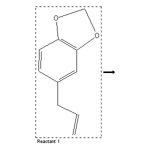

|  |
| FA | RX(1); FLST(1); RX(1) |
Reaction (1 of 1)
| Reaction ID | 5737451 |
| Reactant BRN | 136380 |
| Reactant | methanolic KOH-solution; 5-allyl-benzo[1,3]dioxole |
| Product | methoxymethyl ether of 4-propenyl-pyrocatechol |
| No. of Reaction Details | 1 |
Reaction Details (1 of 1)
| Reaction Classification | Chemical behaviour (half reaction) |
| Temperature | 130 - 140 |
| Comment | Handbook |
| Citation Pointer | 506385; Journal; Wagner; CZCAA5; Chem.-Ztg.Chem.Appar.; 52; 1928; 379; CHZEA6; Chem.Zentralbl.; GE; 99; I; 1928; 3056;506386; Patent; Riedel-de Haen; DE 505404; FTFVA6; Fortschr.Teerfarbenfabr.Verw.Industriezweige; DE; GE; 17; 569, 571;506387; Patent; Riedel-de Haen; DE 507796;506388; Patent; Riedel,J. D.; Boedecker; GB 285156;506389; Patent; Riedel,J. D.; Boedecker; GB 285551; |
Reference (1 of 5)
| Citation Number | 506385 |
| Document Type | Journal |
| Authors | Wagner |
| CODEN | CZCAA5; CHZEA6 |
| Journal Title | Chem.-Ztg.Chem.Appar.; Chem.Zentralbl. |
| Language Code | GE |
| (Series) Volume | 52; 99 |
| Number | I |
| Publication Year | 1928; 1928 |
| Page | 379; 3056 |
Reference (2 of 5)
| Citation Number | 506386 |
| Document Type | Patent |
| Patent Author | Riedel-de Haen |
| Patent Number | DE 505404 |
| CODEN | FTFVA6 |
| Journal Title | Fortschr.Teerfarbenfabr.Verw.Industriezweige |
| Country Code | DE |
| Language Code | GE |
| (Series) Volume | 17 |
| Page | 569, 571 |
Reference (3 of 5)
| Citation Number | 506387 |
| Document Type | Patent |
| Patent Author | Riedel-de Haen |
| Patent Number | DE 507796 |
Reference (4 of 5)
| Citation Number | 506388 |
| Document Type | Patent |
| Patent Author | Riedel,J. D.; Boedecker |
| Patent Number | GB 285156 |
Reference (5 of 5)
| Citation Number | 506389 |
| Document Type | Patent |
| Patent Author | Riedel,J. D.; Boedecker |
| Patent Number | GB 285551 |